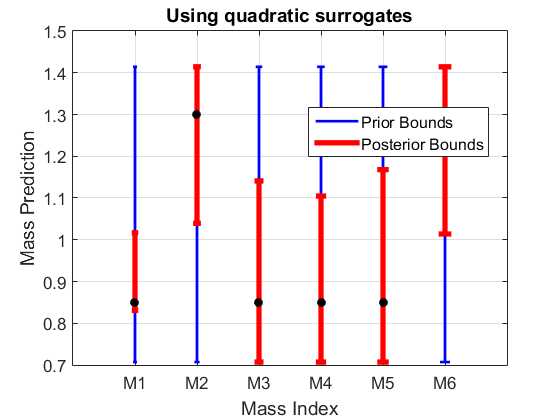
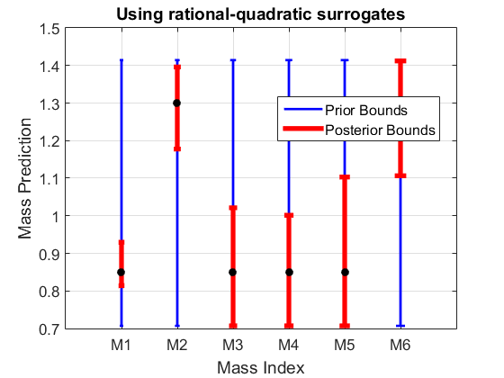

Mass Detection from Impedance Magnitude Measurements Example
Assignment for V/UQ class, UC Berkeley, Univ of Utah, BYU, Fall 2015
Contents
- Build surrogate models and assess error
- Insert variables and bounds into a VariableList object
- Create LatinHyperCube samples for training and validation data
- Define values of all fixed parameters
- Call computational model to evaluate QOIs on training data and validation data
- Create quadratic surrogate model from training data
- Create truth and noisy measurements
- Load observations
- Create the dataset
- Add dataset units
- Predict range of each uncertain mass
- Plot predictions (and hidden true values)
- Create rational-quadratic surrogate model from training data
- Evaluate rational-quadratic surrogate error on validation data
- Create a new dataset with rational-quadratic surrogates
- Add dataset units
- Predict range of each uncertain mass
- Plot predictions (and hidden true values)
Build surrogate models and assess error
Use the code MSD1D.m as the computational model. It handles the general setting on N different masses, with one common stiffness and damping parameter. There are 25 probing frequencies, log-spaces from 0.1 to 3. There are 12 masses.
nUncertainMass = 6; nFixedMass = 6; % number of fixed-value masses (further below) NQOI = 25; % number of probing frequencies wProbeVec = logspace(log10(0.1),log10(3),NQOI); NTrainSamples = 15*nUncertainMass^2; % 6 masses -> 540 samples NValidateSamples = round(NTrainSamples/2);
Insert variables and bounds into a VariableList object
varName = {'M1','M2','M3','M4','M5','M6'};
H = repmat([1/sqrt(2) sqrt(2)],[nUncertainMass,1]);
varList = generateVar(varName,H);
Create LatinHyperCube samples for training and validation data
xTrain = varList.makeLHSsample(NTrainSamples); xValidate = varList.makeLHSsample(NValidateSamples);
Define values of all fixed parameters
fixedMassValue = 1; fixedMassVec = repmat(fixedMassValue,[nFixedMass,1]); Kval = 1; Cval = 0.2;
Call computational model to evaluate QOIs on training data and validation data
yTrain = getQOIonSamples(xTrain, wProbeVec, nUncertainMass, fixedMassVec, Kval, Cval); yValidate = getQOIonSamples(xValidate, wProbeVec, nUncertainMass, fixedMassVec, Kval, Cval);
Create quadratic surrogate model from training data
qSMQOI = []; normalizeX = false; normalizeY = false; qAbsErrStd = zeros(NQOI,1); for k = 1:NQOI qModel = generateModelbyFit(xTrain,yTrain(:,k),varList,... normalizeX, normalizeY,'qinf'); qSMQOI = [qSMQOI ; qModel]; errValidate = yValidate(:,k) - qModel.eval(xValidate); qAbsErrStd(k) = std(errValidate); end
Create truth and noisy measurements
Mtrue = [0.85; 1.3; 0.85; 0.85; 0.85; 1.3]; S = msd1d([Mtrue;fixedMassVec],Kval,Cval); z = freqresp(S(nUncertainMass+nFixedMass+1,1),wProbeVec); yTrue = abs(z(:)); measError = 0.05; yMeas = yTrue.*(1-2*measError*(rand(NQOI,1)-0.5));
Load observations
load Observations;
Create the dataset
dsName = 'Mass Detection Dataset: Quadratic';
dsQ = generateDataset(dsName);
Add dataset units
for k = 1: NQOI dsUnit_Name = ['At frequency w_' int2str(k)]; exp_LB = yMeas(k) - measError*abs(yMeas(k)) - 2*qAbsErrStd(k); exp_UB = yMeas(k) + measError*abs(yMeas(k)) + 2*qAbsErrStd(k); exp_Observe = yMeas(k); dsUnit = generateDSunit(dsUnit_Name,qSMQOI(k),[exp_LB,exp_UB],exp_Observe); dsQ.addDSunit(dsUnit); end
Predict range of each uncertain mass
For each mass, create a linear prediction model which is simply the mass value. Add this as a prediction QOI and run the prediction function.
Opt = B2BDC.Option({'Display',false});
predResultQ = dsQ.calVarBounds([1:nUncertainMass],Opt);
Plot predictions (and hidden true values)
The posterior bounds are plotted as red bars, the prior bounds are plotted as blue bars, and the truth is shown in black.
priorQ= [ [dsQ.Variables.Values.LowerBound]' [dsQ.Variables.Values.UpperBound]']; figure; plotBounds(priorQ,predResultQ, varName); plot(Mtrue,'ko','MarkerFaceColor','k'); xlabel('Mass Index'); ylabel('Mass Prediction'); title('Using quadratic surrogates');
Create rational-quadratic surrogate model from training data
Now, rerun the entire procedure using rational-quadratic surrogates. This particular code cell does take a long time (~1 hr to create the 25 rational-quadratic surrogates).
runRatQuadFit = false; if runRatQuadFit rqSMQOI = []; normalizeX = false; normalizeY = false; rqAbsErrStd = zeros(NQOI,1); for k = 1:NQOI rqModel = generateModelbyFit(xTrain,yTrain(:,k),varList,... normalizeX, normalizeY,'rq'); rqSMQOI = [rqSMQOI ; rqModel]; end save RatQuadModels rqSMQOI else load RatQuadModels end
Evaluate rational-quadratic surrogate error on validation data
This standard deviation will be used to add to the QOI bounds, effectively account for errors in the surrogate models
rqAbsErrStd = zeros(NQOI,1); for k = 1:NQOI errValidateRQ = yValidate(:,k) - rqSMQOI(k).eval(xValidate); rqAbsErrStd(k) = std(errValidateRQ); end
Create a new dataset with rational-quadratic surrogates
dsName = 'Mass Detection Dataset: Rational Quadratic';
dsRQ = generateDataset(dsName);
Add dataset units
for k = 1: NQOI dsUnit_Name = ['At frequency w_' int2str(k)]; exp_LB = yMeas(k) - measError*abs(yMeas(k)) - 2*rqAbsErrStd(k); exp_UB = yMeas(k) + measError*abs(yMeas(k)) + 2*rqAbsErrStd(k); exp_Observe = yMeas(k); dsUnit = generateDSunit(dsUnit_Name,rqSMQOI(k),[exp_LB,exp_UB],exp_Observe); dsRQ.addDSunit(dsUnit); end
Predict range of each uncertain mass
For each mass, create a linear prediction model which is simply the mass value. Add this as a prediction QOI and run the prediction function.
Opt = B2BDC.Option({'Display',false});
predResultRQ = dsRQ.calVarBounds([1:nUncertainMass],Opt);
Plot predictions (and hidden true values)
The inner bounds are plotted as red bars, the outer bounds are plotted as blue bars, and the truth is shown in green.
priorRQ= [ [dsRQ.Variables.Values.LowerBound]' [dsRQ.Variables.Values.UpperBound]']; figure; plotBounds(priorRQ,predResultRQ, varName); plot(Mtrue,'ko','MarkerFaceColor','k'); xlabel('Mass Index'); ylabel('Mass Prediction'); title('Using rational-quadratic surrogates');